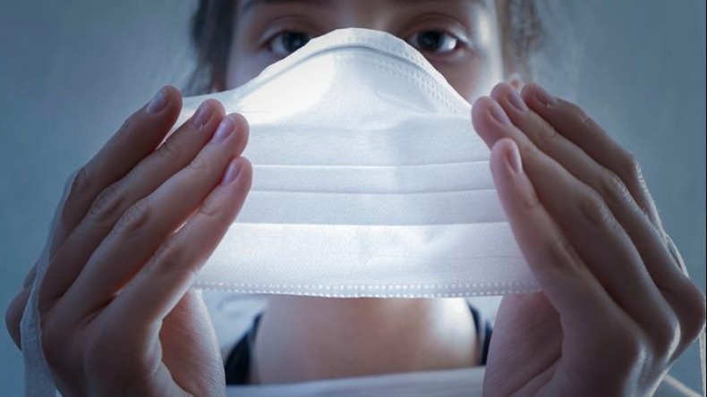
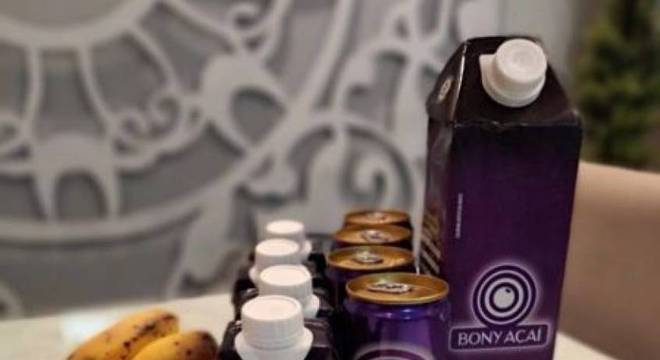

Como enfrentar uma 2ª onda da COVID-19?
Será que assim que as eleições municipais acabarem vamos assistir o recomeço do isolamento social? Será que vamos dormir sonhando com o natal e acordar em março novamente? Saiba mais
Aos 96 anos, aposentado realiza sonho e se forma em universidade na Itália
☞ 96 anos ...
☞ Sobrevivente da 1ª e 2ª Guerra Mundial ...
☞ Sobrevivente da Grande Depressão e outras crises ...
☞ Estudando e se formando em plena pandemia em um país bem acometido pelo COVID.
Saiba
mais
Por que a Heineken USA está ficando mais astuta no Pinterest
Cerveja e artes e artesanato não são uma combinação clássica - especialmente quando se trata de marketing. Espuma e bares esportivos são mais parecidos. Mas a pandemia forçou os fabricantes de cerveja a alguns pares incomuns, enquanto eles tentam se manter no lugar dos bebedores, enquanto bares e restaurantes lutam para se manter abertos em meio a picos de casos de coronavírus. Saiba mais
Mais de 29 mil pessoas venceram a covid-19 em Ribeirão Preto
Dados são de 11 hospitais públicos e privados na cidade; casos confirmados da doença somam 31.040 com 849 mortes. Ribeirão Preto está com 29.163 pacientes recuperados da covid-19, segundo o balanço mais recente divulgado pela plataforma leitoscovid.org em 03 de novembro 2020. Saiba mais
Quatro boas notícias no combate à Covid-19 | #Podcast15Minutos
Avanço em pesquisa sobre medicamentos, desaceleração da epidemia e adesão do Brasil à aliança internacional das vacinas estão entre as boas notícias recentes no combate à Covid-19. Saibamais
Pesquisa estuda benefícios do açaí para pacientes com coronavírus
O açaí é uma das frutas mais populares do Brasil. Além de seu sabor inconfundível, que já caiu no gosto de brasileiros de todas as regiões do país, a fruta típica da Região Norte possuiu diversos benefícios para a saúde, entre eles efeitos anti-inflamatórios. E é com base nisso que pesquisadores de Canadá e do Brasil estão testando a eficácia de extrato de açaí no tratamento de covid-19. Saiba mais